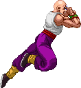
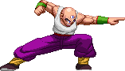

activate Om Mode (LV2)
Activating Om Mode, Tien commands Chiaotzu to LEAVE!
This changes a few things, gameplay-wise.
- With Chiaotzu away, none of his moves are currently available.
- In their place, Tien can now use his Clone moves (detailed below).
- holding the directional button while air dashing covers more space.
- LPx2, Shaolin Spin Kicks, Buddha's Rise, Buddha's Flight, Bukujitsu and Wings are now available.
- Bukujutsu, Crane Stance and Taunts build Om Meter when used.
- LPx2, Shaolin Spin Kicks, Talons and Wings (on hit) all build Om Meter.
- Ungrounded costs LV2 instead of LV3 and cancels the mode.
- Depending if you're on LV1, LV2 or LV3 of the Om Bar when you activate the Ungrounded, Tien will perform a unique Finisher at the end: LV1 - Volley Ball Beatdown.
LV2 - Dual Dodonpa Assault.
LV3 - Shin Kikoho.
- With Chiaotzu away, none of his moves are currently available.
- In their place, Tien can now use his Clone moves (detailed below).
- holding the directional button while air dashing covers more space.
- LPx2, Shaolin Spin Kicks, Buddha's Rise, Buddha's Flight, Bukujitsu and Wings are now available.
- Bukujutsu, Crane Stance and Taunts build Om Meter when used.
- LPx2, Shaolin Spin Kicks, Talons and Wings (on hit) all build Om Meter.
- Ungrounded costs LV2 instead of LV3 and cancels the mode.
- Depending if you're on LV1, LV2 or LV3 of the Om Bar when you activate the Ungrounded, Tien will perform a unique Finisher at the end: LV1 - Volley Ball Beatdown.
LV2 - Dual Dodonpa Assault.
LV3 - Shin Kikoho.


Om Taunt
Not trash-talking the opponent, simply showcasing enlightenment!
Doing this builds your Om meter but leaves you vulnerable, so don't get too cocky with it.


Shaolin Spin Kicks
A move inspired by Marshall Law of Tekken fame.
Pressing MK twice makes Tien perform a double spin kick.
Pressing it a third time does one more spin kick. This last kick has
Strong Kick features even though it's performed with the Medium Kick button.
When instead of the third MK you press forward+MK, Tien does a high side kick
which sends the enemy into an untechable launch, allowing for a juggle combo.
The third and final ender option is a jumping overhead punch which can be used
as a reset, however you'll need to time it just right.
After the second kick you can also link into his default standing strong attacks.
The aerial version is in many ways identical to the grounded version.
One feature of this is that Tien will temporarily halt his gravitational pull to perform the kick,
that is to say he remains largely in place when the kick is activated. This is the case for all three default kicks.
The follow-ups are also the same, but with the launcher kick replaced by a bounce-juggling axe kick.
As with all his aerial attacks, this can be performed during his backdash. Try the MK, MK, MP combination
for a surprise back-and-forth attack!
As with the grounded version, after the second kick you can also link into his default strong attacks.


Buddha's Flight
A horizontal version of the Buddha's Fist. Faster than an air dash!
When done after a Buddha's Fist, just f+SP will suffice for its command.


Buddha's Rise
A diagonal upwards version of the Buddha's Fist. Take to the skies!
You can link Buddha's Fist > Flight > Rise, try it!


Clone Buddha's Rise
A version of the Buddha's Flight that's done from the ground rather than from an aerial position.
Whilst doing the command, you can hold the Punch button to delay the clone from performing the actual attack.
This is true for all four clone of his attacks (except hold the Kick button for kick-command clone moves, obviously).
What is also true is that you may have a better time getting these clone moves to come out by precisely doing the 'Dragon Punch' command:
Forward, Down, Down-forward. Stop at the diagonal-down; don't continue the motion farther forward. This is to prevent getting overlapping commands.


Clone Dodonpa
This replaces Chiaotzu's Dodonpa when in Om Mode, it works pretty much identical except you gain the holding/delaying option.

Clone Taiyoken
Also known as the Solar Flare. This replaces Chiaotzu's Telekinesis when in Om Mode.
It creates a sphere of extremely bright light around the clone of Tien, blinding/stunning the enemy.

Clone Hunting Crane
Acts virtually the same as Tien's own Hunting Crane, though as with all Clone moves, you're limited to just a single version of the attack.

Chiaotzu's Sacrifice
A famous but sad move, Chiaotzu can't stay on the sidelines anymore
and comes flying in to help Tien defeat his enemy by grasping them and then self-destructing into an explosion.
This may or may not kill the little dude. Use for shock value!